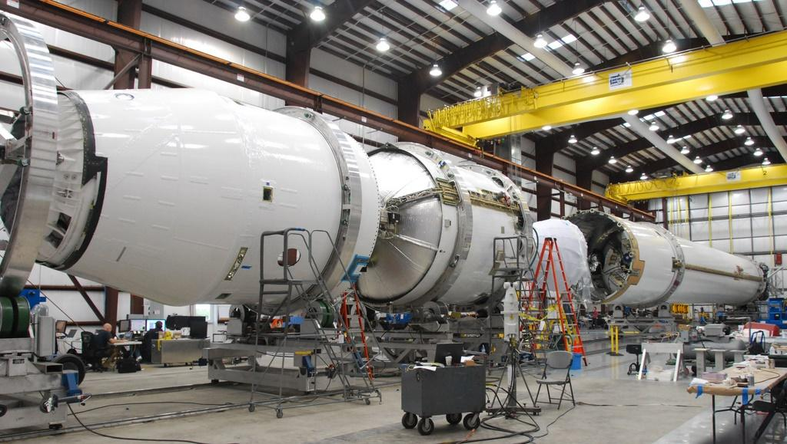
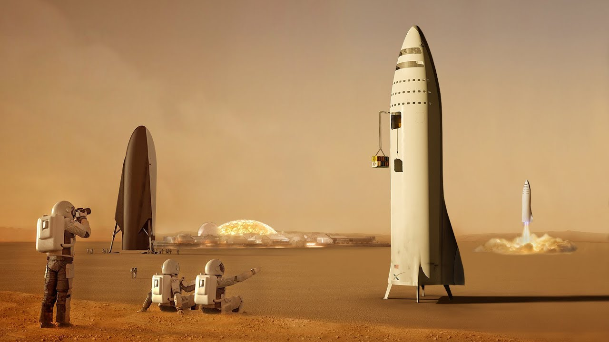
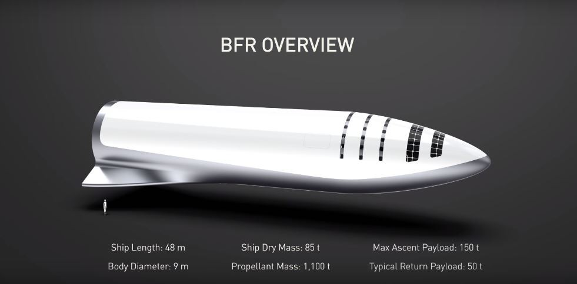

El ayer, hoy y mañana de SpaceX
En mayo del 2020, SpaceX se convirtió en la primera empresa privada en enviar tripulantes desde territorio estadounidense hacia el espacio desde la última misión de la NASA en julio del 2011.
Escrito por:
Carlos Arana Mejía
10/09/2020
En estos últimos meses, se ha escuchado con gran frecuencia los nombres como SpaceX, cohetes espaciales y viajes al espacio. Pero, ¿quién está detrás de todos estos nombres mencionados? Para ponernos en contexto se mencionará primero al hombre capaz de conectar y de darnos una mejor idea acerca de estos términos. Elon Reeve Musk físico, inventor y empresario nacido en Pretoria, Sudáfrica; cuenta con una gran capacidad empresarial y de emprendimiento. Esto, ya que con 30 años de edad era copropietario de 2 empresas digitales con una valiosa demanda en el mercado. No obstante, a pesar de ser millonario a temprana edad y teniendo la opción de dejar de trabajar para “tener una buena vida”, Musk decidió utilizar el capital que tenía para hacer su sueño realidad: llevar al humano a Marte y colonizar ese planeta. La meta para él estaba bastante clara; sin embargo, encontraba una gran interrogante: ¿cómo llevar al humano al espacio y luego enrumbarlo a Marte?
De esta manera, pensando en diferentes opciones, Musk encontró la respuesta en los misiles. Su idea se basó en utilizar tecnología similar a la construcción de misiles para hacer cohetes espaciales. Así pues, en el año 2001, en compañía de amigos suyos, fue en busca de los más grandes misiles balísticos intercontinentales a Rusia. En un inicio, le negaron la compra de los misiles, obteniendo burlas de las compañías encargadas de fabricar estos aparatos. No obstante, luego de insistir en reiteradas ocasiones, llegó a un acuerdo con los rusos, pero los costos de los misiles eran exorbitantes. Musk consideró que era necesario darle un vistazo a los misiles que le estaban ofreciendo. Fue así que, se dio con la sorpresa que la tecnología que utilizaban en dicha empresa estaba desfasada, dándole así una oportunidad y a la vez un nuevo reto: el construir sus propios cohetes espaciales. Fue así que, con ayuda de un ingeniero mecánico con el conocimiento y la experiencia necesaria en cohetes espaciales, Tom Muller, buscarían la manera de disminuir el coste de fabricación de los cohetes y hacer que la mayoría de sus partes sean reutilizables para futuros viajes espaciales.
Del fracaso al éxito
Con todos los acontecimientos suscitados, el siguiente año (2002) se dio origen a Musk Exploration Technologies Corporation (SpaceX). Las primeras oficinas de esta compañía estaban ubicadas en un almacén en la ciudad El Segundo en el Condado de Los Ángeles de California. Al tener un lugar donde poder trabajar, se pusieron en marcha los planes para poder hacer cohetes espaciales de bajo costo y, que sean también reutilizables. Para cumplir con los requisitos mencionados SpaceX tenía que hacer sus propias investigaciones, fabricar y construir todas las partes que el cohete espacial requería. Por lo que, un punto a destacar de esta arriesgada hazaña era el gran presupuesto que se requería emplear para dichas actividades. Pues, pese a ser un cohete de bajo costo el dinero para su producción no era ilimitado porque solo contaban con el presupuesto para realizar 3 intentos de diseños.
El primer intento buscaba poner en órbita, entre 500 y 700 km de altura, al Falcon 1, pero fracasó debido a que a los 34 segundos de ser lanzado el motor se apagó por una fuga de combustible ocasionando fuego en una parte del cohete. Posteriormente, el segundo intento también fue un fracaso. Esto ya que, el cohete llegó a alcanzar una altitud de 289 km al pasar a la segunda etapa del vuelo, no obstante, la velocidad del Falcon 1 no era suficiente para alcanzar la órbita, llegando así a explotar en el aire. Después, se realizó un tercer intento, pero al igual que sus antecesores fue un fracaso e incluso explotó en un menor tiempo con respecto al segundo intento. Así pues, pese a que solo se tenía planeado realizar 3 intentos por un tema de presupuesto, se planeó un cuarto intento. Fue así, como este se llevó a cabo el 28 de septiembre del 2008 con las cuentas ajustadas, pero con el optimismo de realizarlo con éxito. Por consiguiente, gracias a este intento SpaceX se convirtió en la primera empresa privada en poner un cohete en órbita. Este acontecimiento solo fue uno de muchos triunfos y halagos que ha recibido, ya que posteriormente se convirtió también en la primera empresa en enviar material a la estación espacial internacional. Continuando con los logros obtenidos por la empresa, uno muy particular fue el convertirse en la primera empresa en regresar un cohete de vuelta luego de haberlo enviado al espacio (Falcon 9).
Los transportes espaciales se dividen en dos partes: la primera, la de mayor tamaño y; la segunda, la que lleva tripulación u objetos. Así pues, dado que el no reutilizar la primera parte de los transportes iniciales implica mucha pérdida de dinero, SpaceX logro realizar dicha actividad. Donde, el 6 de febrero del 2018, con el propósito de comprobar la eficiencia de carga de uno de sus cohetes llamado Falcon Heavy, lo lanza al espacio junto con un auto Tesla. Así, se llegó a demostrar que este podría resultar ser útil para futuros viajes espaciales. Específicamente, el 30 de mayo de este año, después de mucho tiempo, SpaceX junto con la NASA realizaron un vuelo tripulado en la cápsula Crew Dragon propulsado por el Falcon 9 hacia la Estación Espacial Internacional (ISS). Este acontecimiento ha marcado una nueva oportunidad y un paso más a la idea visionaria que la empresa tiene de llevar a la humanidad a colonizar Marte, pero ¿cómo se logrará esto? ¿En la actualidad habrá una idea o un plan para llevar a Marte? ¿Será viable y seguro llegar a Marte?
La carrera por el planeta rojo
Si bien es cierto, los planes de SpaceX parecen sacados de una película de ciencia ficción o muy alejados de la realidad, la empresa ha demostrado poder con los obstáculos en lo que a la conquista de Marte se refiere. En la conferencia espacial internacional en el año 2016, Elon Musk dio a conocer el transporte espacial construido por SpaceX para llevar a las personas al planeta rojo. El nombre del transporte se le presentó como ITS (Sistema de Transporte Internacional por sus siglas en inglés) un vehículo capaz de llevar hasta cien personas al espacio. Asimismo, en esta conferencia mostró desde cómo será el despegue hasta el recorrido que tendría la nave.
Continuando con el contexto, en la misma conferencia también se presentó el cohete y la nave llamadas BFR (Big Falcon Rocket) y BFS (Big Falcon Ship), respectivamente. A pesar de tener el nombre Musk confesó que estos no serían los nombres comerciales y, que buscaría otros nombres o un nombre más apropiado para el conjunto de estos. También, mencionó que al principio se pensaba construir un cohete con aproximadamente 40 motores llegando a reducirlos a alrededor de 30 motores. Por otro lado, también se redujo el diámetro de 12 a 9 metros aproximadamente, todo con el propósito de reducir el precio de estos, para que pueda ser más rentable y simpatice a un mayor número de personas realizar este viaje espacial.
Una de las partes más emocionantes del evento mencionado fue la distribución de las fechas en las que SpaceX tenía planeado lanzar el cohete. La primera fecha sería en el año 2022, donde se planea enviar dos naves BFS, impulsado por el cohete BFR no tripuladas para confirmar la presencia de agua y algunos soportes eléctricos. Es importante recalcar, que esta misión se hará con el fin de hacer mucho más eficiente y menos riesgoso el viaje al planeta rojo. Por otro lado, la segunda misión se haría con 4 naves más, dos con tripulación y las otras dos sin tripulación. El fin de esta misión será de ser la encargada de crear una planta de producción de combustible y crear una primera colonia marciana autosostenible. Este transporte no sería utilizado únicamente para los viajes a Marte, pues Musk también mencionó que se podían utilizarse para hacer otros viajes interplanetarios y hacer viajes terrestres de un gran recorrido, pero con poco tiempo de viaje. Ejemplificando lo anteriormente mencionado, se podría ir de Nueva York a Shanghái en 39 minutos o de Londres a Los Ángeles en 32 minutos. Finalmente, en lo que respecta a la trayectoria de la compañía SpaceX, en el año 2018 y los siguientes años hasta la actualidad, se decidió cambiar el nombre de la nave a Starship propulsado por cohete Super Heavy. El nombre no solo ha sido uno de los varios cambios de este ambicioso proyecto de llegar a Marte, sino en la construcción de la nave que ahora no se va a construir de fibra de carbono, como suelen ser todos los trasportes de este tipo, sino de acero ya que es más económico y se puede encontrar con más facilidad en la atmósfera marciana.
En definitiva, aunque uno de los planes más cercanos de la empresa sea llevar a algunos “afortunados” (obviamente a los que puedan pagar el viaje) a hacer un recorrido al espacio y a los alrededores de la luna con una duración de viaje de una semana aproximadamente. Con este viaje, desde mi punto de vista, se podría comprobar tanto la funcionalidad del Starship para ir al espacio, así como, hacer que las personas comunes quieran un espacio para formar parte de la colonización de Marte. En la actualidad, existen dos prototipos de Starship, uno realizado en Texas y el otro en Florida en donde se han realizado pruebas, algunas fallidas y otras con éxitos. Esto, significa que no estamos tan alejados de poder realizar viajes espaciales y, con los grandes resultados que respaldan a SpaceX pese a sus cortos 10 años en la industria, podemos decir que, tanto los viajes espaciales comerciales y la colonización de Marte son cada vez son más posibles a realizarse en un futuro no muy lejano. Claro está que un plan se encuentra más cercano que el otro, pero con la meta de poder hacer a la raza una especie multiplanetaria.